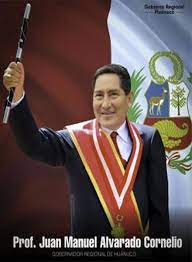

La historia de Huánuco, comienza con la llegada de los españoles, que la fundaron el 15 de agosto de 1539 con el nombre de Huánuco de los Caballeros. El 15 de diciembre de 1820, se produjo el primer juramento de independencia, luego de varios levantamientos en los poblados de Huallanca, Huamalies y Ambo; luego de la captura de Atahualpa el 16 de noviembre de 1532, Francisco Pizarro envía a sus emisarios a todo el imperio Inca a pedir oro y plata a cambio de su rescate. Hernando Pizarro, hermano de Francisco, con unos 25 hombres llegó a suelo huanuqueño en marzo de 1532.
Juan Manuel Alvarado Cornelio (Distrito de La Unión, 7 de agosto de 1959 - ) es un docente y político peruano. Actualmente es gobernador regional de Huánuco para el periodo 2019-2022. Nació en La Unión, provincia de Dos de Mayo, departamento de Huánuco, Perú.
